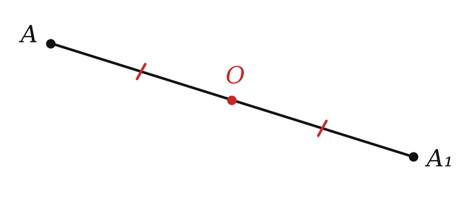
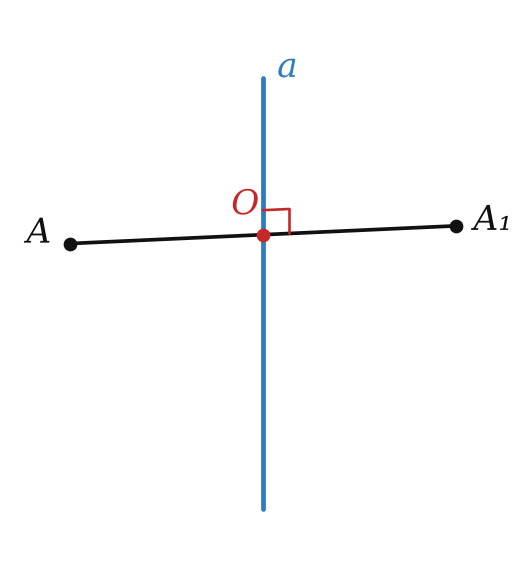
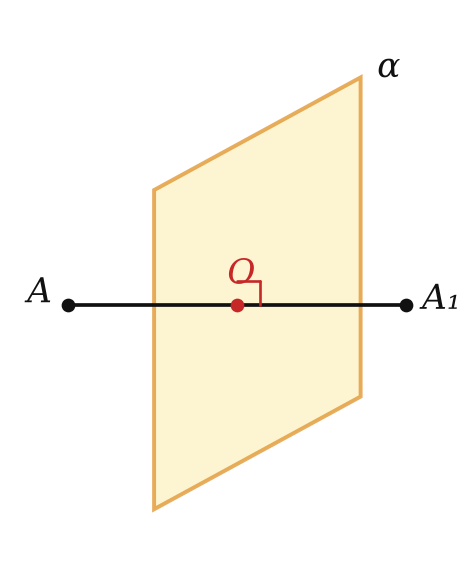
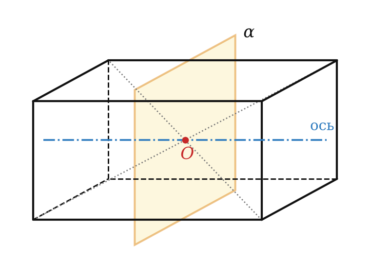
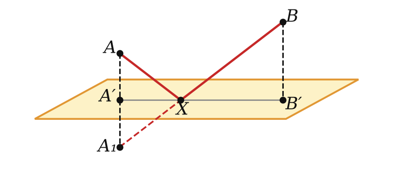

относительно точки, прямой и плоскости



| условие | неподвижны | |
|---|---|---|
| точка O | O — середина AA₁ | только O |
| прямая a | a ⊥ AA₁, через середину | прямая a |
| плоскость α | α ⊥ AA₁, через середину | плоскость α |
Все три симметрии сохраняют расстояния.

